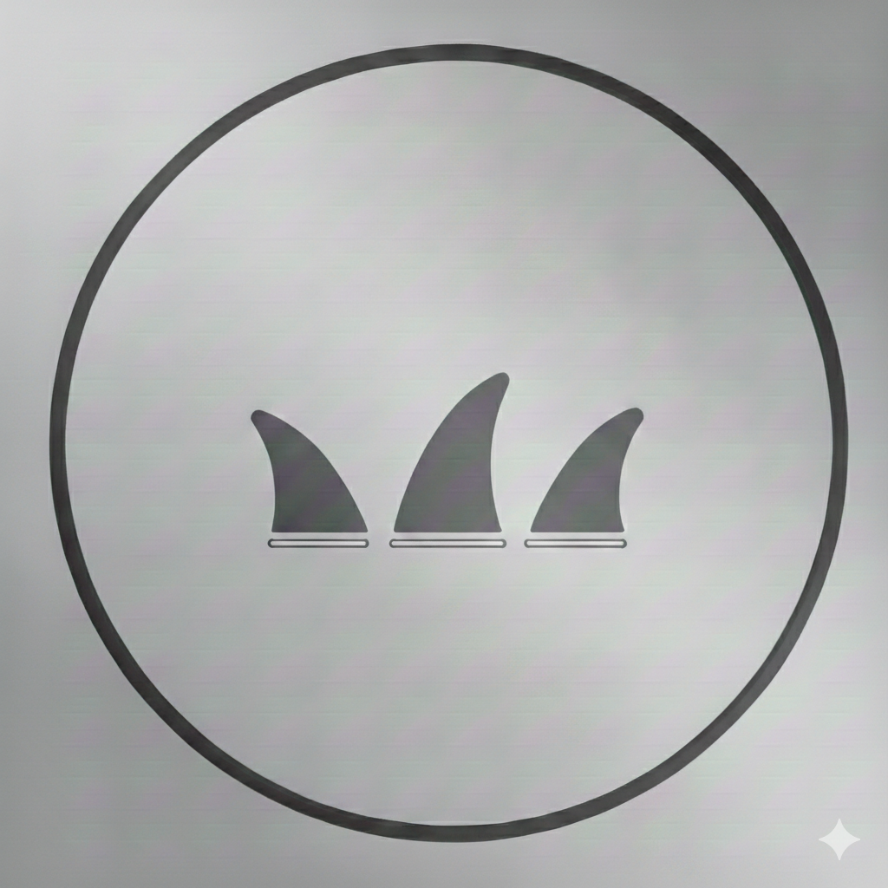
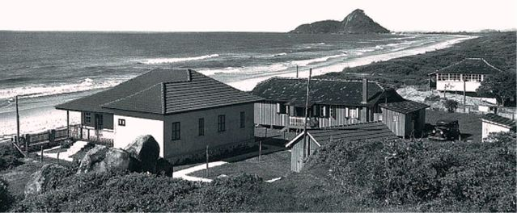
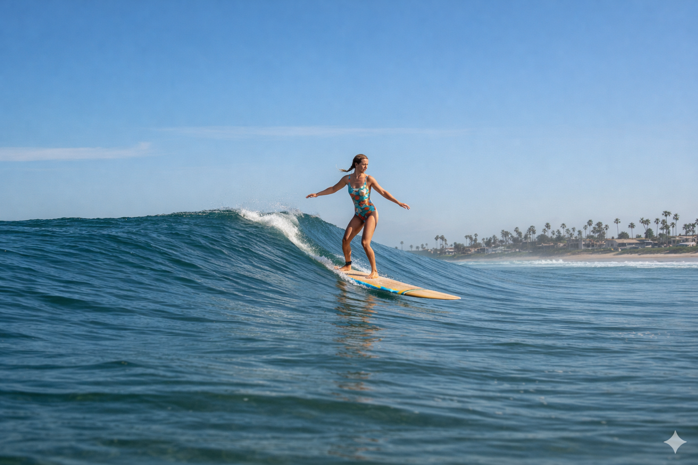

Nossos Produtos
Pranchas
Quilhas



A SurfCo. nasceu onde o surf é mais do que um esporte — é parte da vida. Em 1988, na pequena cidade litorânea de
Matinhos, no Paraná, dois amigos decidiram transformar sua paixão pelo surf em algo maior. Rogério McCommeck e
Maiko Cooper começaram de forma simples, confeccionando pranchas para amigos e familiares, guiados apenas
pelo amor pelas ondas e pelo desejo de compartilhar esse estilo de vida.
Com o tempo, o trabalho ganhou reconhecimento e ultrapassou os limites do círculo de amigos, espalhando-se por
toda a cidade. Assim, se tornando a primeira surfshop de Matinhos. Ao longo dos anos, a SurfCo. cresceu e
passou a oferecer outros produtos, mas nunca se afastou de sua essência: a liberdade e autencidade que o surf transmite.
Nossa missão nasce do mesmo dilema que acompanha todo surfista: respeitar o mar enquanto aprendemos com ele.
Desde o início, acreditamos que o surf vai além da prática. Ele ensina paciência nas esperas, coragem nas
quedas e humildade diante da imensidão. Nossa missão é preservar e transmitir esses valores, mantendo
viva a essência que conecta pessoas ao mar e entre si.
Buscamos criar e compartilhar aquilo que faz sentido para quem vive esse caminho, sempre com consciência,
simplicidade e verdade. Mais do que seguir movimentos, escolhemos honrar histórias, trajetórias e a relação
profunda entre o surfista e a natureza.


SurfShop SurfCo
Rua Reinoldo Scheffer, 543
Centro, Matinhos-PR, 80321-800

Loja: +55(41) 3222-8148

Surf.Company@gmail.com.br

@SurfCo.mBR